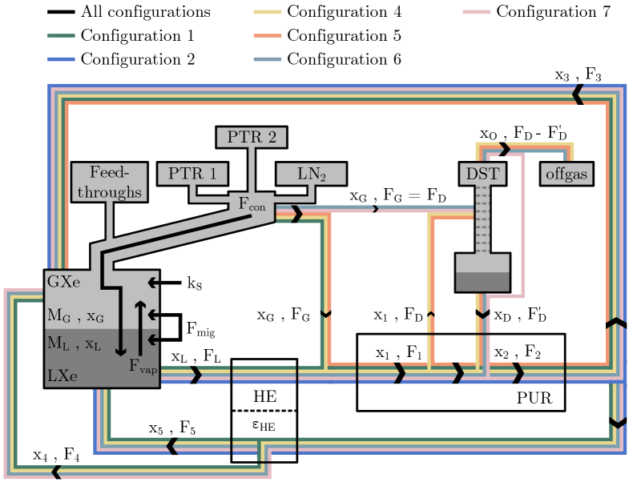
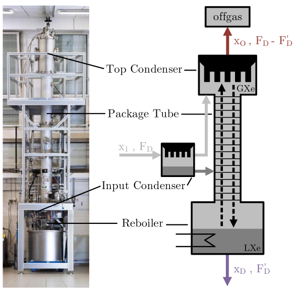
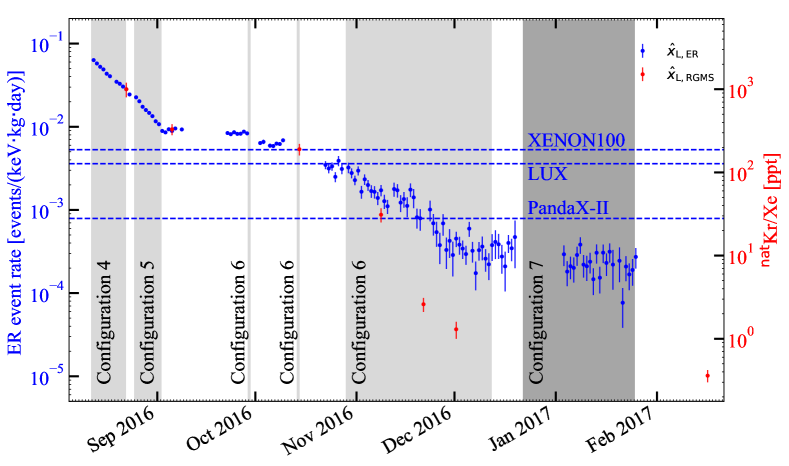
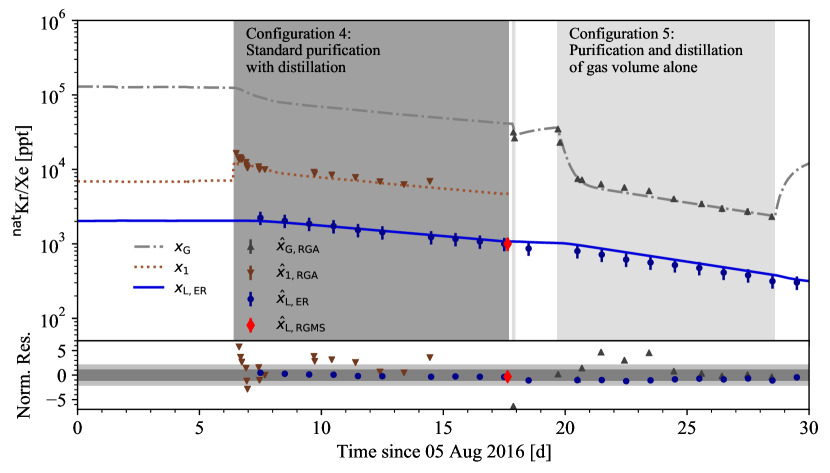
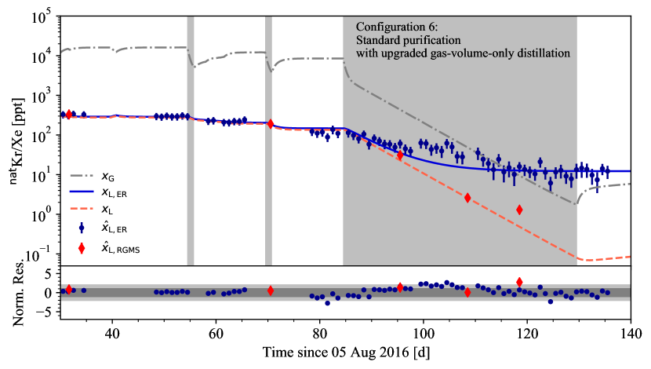
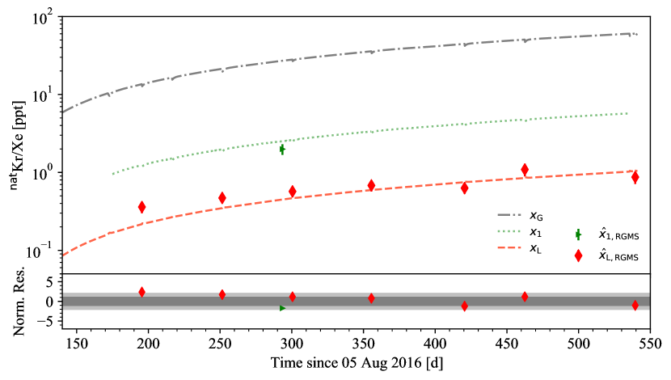
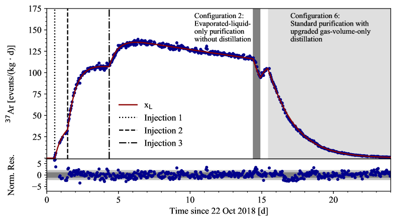

XXXX-XXXX
1]Physics Department, Columbia University, New York, NY 10027, USA 2]Kamioka Observatory, Institute for Cosmic Ray Research, and Kavli Institute for the Physics and Mathematics of the Universe (WPI), University of Tokyo, Higashi-Mozumi, Kamioka, Hida, Gifu 506-1205, Japan 3]Department of Physics and Astronomy, University of Bologna and INFN-Bologna, 40126 Bologna, Italy 4]LPNHE, Sorbonne Université, Université de Paris, CNRS/IN2P3, 75005 Paris, France 5]Institut für Physik & Exzellenzcluster PRISMA+, Johannes Gutenberg-Universität Mainz, 55099 Mainz, Germany 6]Institut für Kernphysik, Westfälische Wilhelms-Universität Münster, 48149 Münster, Germany 7]INAF-Astrophysical Observatory of Torino, Department of Physics, University of Torino and INFN-Torino, 10125 Torino, Italy 8]Nikhef and the University of Amsterdam, Science Park, 1098XG Amsterdam, Netherlands 9]Oskar Klein Centre, Department of Physics, Stockholm University, AlbaNova, Stockholm SE-10691, Sweden 10]Department of Physics & Kavli Institute for Cosmological Physics, University of Chicago, Chicago, IL 60637, USA 11]New York University Abu Dhabi - Center for Astro, Particle and Planetary Physics, Abu Dhabi, United Arab Emirates 12]Physik-Institut, University of Zürich, 8057 Zürich, Switzerland 13]Department of Physics and Astronomy, Purdue University, West Lafayette, IN 47907, USA 14]INFN-Laboratori Nazionali del Gran Sasso and Gran Sasso Science Institute, 67100 L’Aquila, Italy 15]Physikalisches Institut, Universität Freiburg, 79104 Freiburg, Germany 16]SUBATECH, IMT Atlantique, CNRS/IN2P3, Université de Nantes, Nantes 44307, France 17]Department of Particle Physics and Astrophysics, Weizmann Institute of Science, Rehovot 7610001, Israel 18]LIBPhys, Department of Physics, University of Coimbra, 3004-516 Coimbra, Portugal 19]Max-Planck-Institut für Kernphysik, 69117 Heidelberg, Germany 20]Department of Physics “Ettore Pancini”, University of Napoli and INFN-Napoli, 80126 Napoli, Italy 21]Institute for Astroparticle Physics, Karlsruhe Institute of Technology, 76021 Karlsruhe, Germany 22]Department of Physics and Chemistry, University of L’Aquila, 67100 L’Aquila, Italy 23]Department of Physics and Astronomy, Rice University, Houston, TX 77005, USA 24]Department of Physics & Center for High Energy Physics, Tsinghua University, Beijing 100084, China 25]Kobayashi-Maskawa Institute for the Origin of Particles and the Universe, and Institute for Space-Earth Environmental Research, Nagoya University, Furo-cho, Chikusa-ku, Nagoya, Aichi 464-8602, Japan 26]Department of Physics, University of California San Diego, La Jolla, CA 92093, USA 27]Department of Physics, Kobe University, Kobe, Hyogo 657-8501, Japan
XENON Collaboration
تطبيق ونمذجة طريقة تقطير آنية لتقليل الكريبتون والأرغون في XENON1T
الملخص
طورت تقنية تقطير آنية جديدة لتجربة المادة المظلمة XENON1T من أجل تقليل مكونات الخلفية الذاتية الأكثر تطايرا من الزينون، مثل الكريبتون أو الأرغون، أثناء تشغيل الكاشف. تستند الطريقة إلى تنقية مستمرة للحجم الغازي في منظومة الكاشف باستخدام عمود التقطير المبرد في XENON1T. وقد تحقق تركيز للكريبتون في الزينون قدره . وهو أدنى تركيز قيس حتى الآن في الحجم الائتماني لكاشف مادة مظلمة عامل. طُور نموذج ووفق مع البيانات لوصف تطور الكريبتون في الحجمين السائل والغازي لمنظومة الكاشف لعدة أنماط تشغيل على مدى زمني قدره 550 يوما، بما في ذلك مرحلة التشغيل التجريبي وجولات القياس العلمية في XENON1T. كما طبقت عملية التقطير الآنية بنجاح لإزالة \isotope[37]Ar بعد حقنه لأغراض معايرة منخفضة الطاقة في XENON1T. وهذا يجعل استخدام \isotope[37]Ar مصدرا منتظما للمعايرة ممكنا في المستقبل. ويمكن تطبيق التقطير الآني على تجارب TPC المستقبلية المعتمدة على LXe لإزالة الكريبتون قبل أي جولة علمية أو خلالها. ويتيح النموذج المطور هنا مزيدا من تحسين استراتيجية التقطير للكواشف الكبيرة المستقبلية.
xxxx, xxx
1 مقدمة
تعد ملوثات الغازات النبيلة المشعة الذاتية، مثل \isotope[85]Kr و\isotope[222]Rn، المساهم الرئيسي في الخلفية في تجارب المادة المظلمة الكبيرة الحالية القائمة على الزينون السائل Aprile et al. [XENON collaboration] (2017d, 2020); Akerib et al. [LZ collaboration] (2020); Zhang et al. [PandaX collaboration] (2019); Aalbers et al. [DARWIN collaboration] (2016)، وكذلك في تجارب اضمحلال بيتا المزدوج عديم النيوترينوات Albert et al. [nEXO collaboration] (2018); Alvarez et al. [NEXT collaboration] (2012). وتمثل إزالتها أهمية حاسمة لبلوغ الحساسيات المستهدفة مع ازدياد متطلبات خفض الخلفيات. ومن التقنيات الراسخة لهذه الإزالة استخدام أعمدة التقطير المبردة التي تستغل فروق ضغط البخار بين الملوث والزينون. فالمكونات الأكثر تطايرا، مثل الكريبتون، تتركز في طور الزينون الغازي (GXe)، في حين تتراكم المكونات الأقل تطايرا، مثل الرادون، في الزينون السائل (LXe) Abe et al. [XMASS collaboration] (2009); Wang et al. (2014); Aprile et al. [XENON collaboration] (2017c); Bruenner et al. (2017); Aprile et al. [XENON collaboration] (2017b).
النظير \isotope[85]Kr باعث بطاقة نهاية عظمى مقدارها ونصف عمر مقداره . وينتج بفعل الإنسان في انشطار اليورانيوم والبلوتونيوم، ويطلق في الغلاف الجوي بواسطة اختبارات الأسلحة النووية ومحطات إعادة المعالجة النووية. وعادة ما تذكر وفرة \isotope[85]Kr في الكريبتون الطبيعي بأنها Du et al. (2003). وبما أن الزينون يستخلص من الهواء بالتقطير التجزيئي، فإن جزءا صغيرا من الكريبتون الطبيعي يوجد ضمن الزينون، عادة عند مستوى ppm (). ويمكن شراء زينون ذي تركيز كريبتون أدنى (\isotope[nat]Kr/Xe ()) من موردين صناعيين. وتتطلب تجارب المادة المظلمة الحالية والمستقبلية تراكيز كريبتون طبيعي في الزينون عند مستوى () أو أدنى Aprile et al. [XENON collaboration] (2020). ويفترض عادة أن انبعاث الكريبتون من مكونات الكاشف مهمل. لذلك ينبغي إزالته من الزينون مرة واحدة فقط قبل البحث عن المادة المظلمة. وتجرى هذه الإزالة تقليديا بواسطة حملات تقطير غير متصلة أو كروماتوغرافيا غازية Akerib et al. [LUX collaboration] (2018); Akerib et al. [LZ collaboration] (2020) قبل بدء التجربة، إذ تستطيع كلتا التقنيتين بلوغ النقاوة المطلوبة.
في حالة تجربة XENON1T، ملئ الكاشف في البداية بنحو من الزينون من دون إزالة غير متصلة للكريبتون. وبعد التحقق من وظائف حجرة الإسقاط الزمني للزينون السائل (LXe TPC)، طورت تقنية تقطير كريبتون آنية جديدة باستخدام عمود التقطير القائم في XENON1T Aprile et al. [XENON collaboration] (2017c) لتقليل تركيز الكريبتون في الزينون أثناء تشغيل الكاشف.
طُبقت تقنية التقطير الآنية نفسها لإزالة غاز نبيل أكثر تطايرا من الزينون، وهو الأرغون. وقد أدخل النظير المشع \isotope[37]Ar إلى كاشف XENON1T قبيل تفكيكه لأغراض المعايرة Aprile et al. [XENON collaboration] (2021b). وقد أتاح اضمحلاله عبر الأسر الإلكتروني دراسة استجابة الكاشف عند طاقات منخفضة قدرها لانتقالات الغلاف K و لانتقالات الغلاف L Bé et al. (2013). غير أن نصف عمره البالغ أطول من أن يضمحل بعيدا ضمن نطاق بحث عن المادة المظلمة. ويصبح الاستخدام المنتظم ممكنا عبر الإزالة الفعالة للأرغون المتبقي بعد المعايرة بواسطة التقطير الآني للشوائب المتطايرة.
تعرض هذه الورقة تقنية التقطير الآني الجديدة المذكورة أعلاه للأرغون والكريبتون. في القسم 2، تلخص منظومة كاشف XENON1T مع التركيز على الأنظمة المعنية بالتقطير الآني. وفي القسم 3، يقدم نموذج لوصف تطور تركيز الغازات النبيلة الأكثر تطايرا في حجمي الزينون الغازي والسائل في الكاشف لكل نمط تشغيل. ويصف القسم 4 مواءمة النموذج مع بيانات الكريبتون المستخرجة من معدل الأحداث داخل LXe TPC نفسها، وكذلك من عينات زينون مستخرجة. علاوة على ذلك، تعرض إزالة \isotope[37]Ar آنيا في القسم 5. ويقدم القسم 6 خاتمة ومخططا للتطبيقات المستقبلية الممكنة للطريقة المطورة حديثا.
2 الترتيب التجريبي
كانت تجربة XENON1T (التي أخرجت من الخدمة في ديسمبر 2018) موجودة تحت الأرض في Laboratori Nazionali del Gran Sasso (LNGS)، إيطاليا، واستخدمت ما مجموعه من الزينون. واحتوت LXe TPC داخل الكريوستات على نحو ، في حين استخدمت المحيطة بها درعا سلبيا. ووضع الكريوستات داخل خزان ماء عرضه وارتفاعه مزود بنظام فعال لرفض ميونات شيرنكوف Aprile et al. [XENON collaboration] (2014)، بغرض التدريع من النشاط الإشعاعي البيئي وما تبقى من الإشعاع الكوني. واحتوى مبنى خدمات بجوار خزان الماء على عمود تقطير مبرد (DST)، ونظام تنقية (PUR)، ونظام تبريد (CRY)، وهي الأنظمة ذات الصلة بهذا العمل. ويرد عرض كامل للأنظمة الفرعية المختلفة في المرجع Aprile et al. [XENON collaboration] (2017d).

يتكون نظام CRY من ثلاثة أبراج تكثيف مستقلة كما هو مبين في الشكل 1، اثنان منها مزودان بثلاجات أنبوبية نبضية احتياطية (PTRs) وواحد بتبريد بالنتروجين السائل (LN2) كنسخة احتياطية. ويحافظ النظام على ثبات درجة حرارة الزينون أثناء أخذ البيانات. وتصل أنبوبة مفرغة مزدوجة الجدار ومعزولة (cryopipe) نظام CRY بالكريوستات لنقل LXe إلى الكريوستات بعد إعادة التكثيف. يستخرج LXe ويبخر من الكريوستات عبر مبادل حراري أنبوب-داخل-أنبوب داخل cryopipe، ويسخن GXe الناتج لاحقا بمساعدة مبادلين حراريين صفائحيين متوازيين مركبين على التوالي. ومن أجل التبسيط، تعامل سلسلة المبادلات الحرارية بوصفها مبادلا حراريا واحدا يشار إليه باسم HE. ثم يوجه مخرج HE إلى نظام PUR. وتعود معظم كمية GXe المنقى إلى الجانب الآخر من هذا HE لتسييل الزينون مرة أخرى وإعادته إلى الكاشف. وتوجه كسرة غازية صغيرة مباشرة إلى نظام الجرس الغاطس (محذوف في الشكل 1) لتنظيم مستوى السائل داخل LXe TPC. وإضافة إلى ذلك، ولأغراض التنقية، يمكن استخراج كسرة من الزينون المتبخر من الكريوستات عند ثلاثة مواضع مختلفة من نظام CRY (منافذ العبور، cryopipe، المكثفات) وإرسالها إما إلى نظام DST أو نظام PUR قبل إعادة التكثيف.
يعيد نظام PUR تدوير الزينون المستخرج من نظام CRY باستمرار لإزالة الشوائب الكهروسلبية مثل الماء والأكسجين. ويمكن لهذه الشوائب أن تكبت إشارات الضوء والشحنة في LXe TPC. وينقسم نظام PUR إلى فرعين، يتكون كل منهما من مضخة عالية النقاوة ومتحكم تدفق، فضلا عن منقي غاز. وبالإضافة إلى ذلك، يعمل نظام PUR موزعا لغاز الزينون بين أنظمة فرعية مختلفة. ولتوضيح العرض، لا يظهر نظام PUR في الشكل 1 إلا خطوط التوزيع ذات الصلة بهذا العمل. يتكون نظام DST، المصمم لإزالة الكريبتون من الزينون، من أربعة مكونات رئيسية، وهي مكثف مدخل، وأنبوب حشوي، وغلاية إعادة، ومكثف علوي. ويعرض الشكل 2 مخططا إلى جانب صورة للترتيب في University of Münster قبل شحنه إلى LNGS. ويدخل الزينون نظام DST بتركيز كريبتون وتدفق ، ويسال جزئيا في مكثف المدخل. ومن هناك يغذي GXe وLXe الأنبوب الحشوي عند ارتفاعات مختلفة. وتحتوي غلاية الإعادة عند القاع على حجم من الزينون السائل يبخر جزئيا، بينما يعيد المكثف العلوي تسييل غاز الزينون الصاعد. وبهذه الطريقة ينشأ تدفق معاكس من GXe الصاعد وLXe الهابط على سطح الأنبوب الحشوي، بحيث تتركز الغازات الأكثر تطايرا من الزينون، مثل الأرغون أو الكريبتون، عند القمة وتستنفد عند القاع. وهنا يمكن استخراج زينون فائق النقاوة بتركيز كريبتون وبتدفق ، وعادة ما يكون نحو من تدفق التغذية . وفي القمة، تستخرج كسرة زينون صغيرة مقدارها من على هيئة غاز عادم زينون غني بالكريبتون (، ) وتخزن في أسطوانات. ويجمع غاز العادم ويقطر مرة أخرى في حملات مخصصة لتقليل فاقد الزينون. حُدد أداء نظام DST باستخراج عينات خلال حملات تقطير غير متصلة، حيث كان الزينون من الأسطوانات يقطر ويملأ في نظام تخزين XENON1T بسرعة معالجة قدرها . وفي إحدى الحملات، قيس محتوى ثلاث أسطوانات بجهاز كروماتوغراف غازي تجاري فأعطت تركيزا متوسطا قدره . أما الأسطوانة الرابعة، فقد نصت شهادة من الشركة الموردة على أن تركيز الكريبتون فيها أقل من . وقيس أن عينة المخرج المنقى لها تركيز من عينة مستخرجة عند نظام PUR. وبافتراض احتمال منتظم للتركيز المجهول في الأسطوانة الرابعة بين و، يكون عامل الخفض بين التغذية والمنتج السفلي. وقيس مباشرة عند مخرج نظام DST تراكيز مطلقة \isotope[nat]Kr/Xe < () ( C.L.)، وذلك عند تقطير زينون بتراكيز إدخال تقارب خلال جولات تقطير غير متصلة لاحقة. وتعرض جميع التفاصيل في المرجع Aprile et al. [XENON collaboration] (2017c).

بالنسبة إلى طريقة التقطير الآني، يفترض أن الكريوستات بالاشتراك مع نظام CRY يشكل نظاما شبيها بعمود تقطير، مع إثراء للأنواع النبيلة الأكثر تطايرا في حجم GXe الخاص بالكاشف نسبة إلى حجم LXe. في القسم التالي، تشرح طريقة التقطير الآني في حالة الكريبتون، مع أن الطريقة قابلة للتطبيق على نحو مماثل على أي نوع من الغازات النبيلة أكثر تطايرا من الزينون. ويستند المفهوم إلى التنقية المستمرة لحجم GXe بواسطة عمود التقطير. ويمكن تحقيق ذلك باستخراج غاز الزينون الغني بالكريبتون عبر منافذ نظام CRY المذكورة أعلاه. ويعود الزينون الخالي من الكريبتون من مخرج نظام DST إلى نظام PUR ومنه إلى الكاشف. وتخل هذه العملية بتوازن جسيمات الكريبتون بين حجمي LXe وGXe، إذ يصبح حجم GXe ذا تركيز كريبتون أدنى. ونتيجة لذلك، تهاجر جسيمات الكريبتون من حجم LXe نحو حجم GXe، حيث تزال مرة أخرى. وهكذا تنشأ هجرة مستمرة للكريبتون من حجم LXe إلى حجم GXe. وبهذه الطريقة يمكن تنقية كامل مخزون الزينون البالغ نحو بمعالجة مستمرة لنحو تشغل حجم GXe.
3 نموذج التقطير الآني
في هذا القسم، يشتق نموذج للتقطير الآني لوصف تطور تركيز الكريبتون في حجم GXe وكذلك في حجم LXe داخل الكاشف مع الزمن. تغطي هذه الورقة مدى زمنيا قدره 550 يوما من أغسطس 2016 حتى فبراير 2018، ويشمل مرحلة التشغيل التجريبي، والجولة العلمية الأولى (SR0)، والجولة العلمية الثانية (SR1) لتجربة XENON1T Aprile et al. [XENON collaboration] (2018). وفي نموذج التقطير الآني تؤخذ في الحسبان تدفقات الكريبتون الداخلة والخارجة في كلا الحجمين، مما يؤدي إلى منظومة معادلات تفاضلية مقترنة لتهيئة كاشف معطاة. ويمكن تطبيق النموذج على نحو مماثل لإزالة أي نوع من الغازات النبيلة أكثر تطايرا من الزينون، مثل إزالة الأرغون. لذلك تستخدم في ما يلي التسمية الأكثر عمومية تركيز المذاب.
يزيل نظام PUR باستمرار الشوائب الكهروسلبية من حجمي LXe وGXe أثناء جولة خلفية أو جولة معايرة. ويشتق نقل المذاب في النظام الكلي اعتمادا على هذه العملية الرئيسية. في الحالة المثالية، يمكن تبسيط الكريوستات في الشكل 1 إلى حجم LXe ساكن بكتلة وتركيز مذاب ، وفوقه حجم GXe بكتلة وتركيز مذاب . ويفترض أن المذاب في كل حجم موزع توزيعا متجانسا في جميع الأوقات. وعند الاتزان، يتركز المذاب الأكثر تطايرا في GXe. ويمكن وصف هذا الإثراء بالتطايرية النسبية ، المشتقة من قانون راؤولت McCabe et al. (2005)، والمعرفة بأنها النسبة بين ضغط بخار مذاب الغاز النبيل وضغط بخار الزينون ،
| (1) |
من المعادلة (1) يمكن ربط التركيز في حجم GXe بالتركيز في حجم LXe عند الاتزان. وللتراكيز المنخفضة للمذاب ( وما دونها) تصح العلاقة الآتية
| (2) |
حيث يفترض أن .
بعيدا عن الاتزان، يمكن لجسيمات المذاب أن تهاجر من السائل إلى الغاز حتى تتحقق المعادلة (2). ويدخل هذا الأثر في النموذج عبر حد هجرة ذي تدفق هجرة بوحدات تدفق كتلة الزينون؛ ويضاف في المعادلتين (6) و(7) اللتين تصفان النموذج الكامل. وترد تفاصيل أكثر عن حد الهجرة في المرجع Murra (2019).
في الواقع، النظام ليس ساكنا، إذ يتبخر الزينون بتدفق كتلة في الكريوستات بسبب الإدخال الحراري الخارجي. ويجب إعادة تكثيف هذا الزينون بتدفق كتلة بمساعدة أحد أجهزة PTR كما هو مبين في الشكل 1. ومن الممكن أن ينقل هذان التدفقان من الزينون المذاب بين الطورين في LXe TPC، غير أن بياناتنا ليست حساسة لمقدار هذا الأثر بسبب تغايره مع ومعلمات حرة أخرى في النموذج. وفي هذا النموذج، يحمل الزينون المتبخر تركيز مذاب ، ويحمل الزينون المتكثف عند إصبع PTR البارد تركيز مذاب . ويعني ذلك أن الكريوستات بالاشتراك مع نظام CRY يعمل كنظام شبيه بعمود تقطير يضم ما يصل إلى مرحلتي تقطير. ويناقش ذلك بمزيد من التفصيل أدناه في الفقرة الفرعية الخاصة بالتهيئة 3: من دون تدوير. يستخرج الزينون من حجم GXe بتركيز مذاب من نظام CRY ويوجه إلى نظام PUR بتدفق كتلة . ومن حجم LXe، يستخرج الزينون ذو تركيز المذاب ويبخر بتدفق كتلة عبر HE. ويفترض أن تركيز المذاب في الزينون المستخرج يبقى ثابتا، لأن هذا تدفق مدفوع بالضغط، وأن تركيز المذاب عموما مستقل عن تغيرات الضغط في مسار التدفق. يمتزج تيارا الزينون من حجمي GXe وLXe عند مدخل نظام PUR. ويمكن كتابة التركيز في تدفق الكتلة المجموع على النحو الآتي
| (3) |
عند مخرج PUR، ينقسم تدفق جسيمات المذاب مرة أخرى. فيعود تدفق جسيمات مذابة إلى حجم GXe، في حين توجه كسرة صغيرة من هذا التدفق مباشرة إلى الجرس لتثبيت مستوى السائل في LXe TPC. وفي هذا النموذج لا يفصل حجم الجرس الغازي عن بقية حجم GXe، إذ يفترض أن كليهما في تماس جيد يسمح بامتزاج سريع. لذلك يحذف الجرس في الشكل 1. ويتدفق تدفق المذاب الباقي إلى HE من أجل التسييل. وبسبب كفاءته المحدودة البالغة ، ينقسم التدفق الداخل إلى تدفق جسيمات مذابة يوجه إلى GXe وتدفق جسيمات مذابة يضاف إلى حجم LXe. ينبغي أن يكون تركيز المذاب أكبر من ، متدرجا بعامل إثراء بحجم التطايرية النسبية أو أكبر منها: . ويمكن حساب تدفقات كتلة الزينون المقابلة بحيث تكون و. ومن ثم يمكن كتابة تدفقي جسيمات المذاب إلى حجمي GXe وLXe على النحو الآتي
| (4) | ||||
| (5) |
يدخل المذاب النظام المغلق احتمالا إما نتيجة تسربات مجهرية في النظام الكلي أو خروج غاز من المواد. وبما أنه لا يمكن التمييز بين الظاهرتين، أدخلت في النموذج معلمة مصدر وحيدة على هيئة تدفق جسيمات مذابة ثابت يدخل حجم GXe كما هو مبين في الشكل 1.
بجمع جميع الآثار، يمكن وصف تغير تركيز المذاب مع الزمن في حجم GXe و في حجم LXe بمجموعة المعادلات التفاضلية الآتية:
| (6) |
| (7) |
في كلتا المعادلتين، يقابل الحد (I) الهجرة (تعزيز الطور الغازي عند الاتزان)، والحد (II) التكثيف، والحد (III) التبخر. أما في حجم GXe، فالحدود الإضافية هي استخراج الغاز (IV)، والغاز العائد مباشرة (V)، والغاز العائد الإضافي من HE (VI)، وحد المصدر الثابت (VII). أما في حجم LXe، فالحدود الأخرى هي الاستخراج (IV) والسائل العائد من HE (V). ويقسم كل تدفق من جسيمات المذاب على كتلة الحجم المقابل لنمذجة تغير في تركيز المذاب بدلا من عدد جسيمات المذاب. علاوة على ذلك، تشير إشارة كل حد إلى ما إذا كان المذاب يغادر حجما () أم يدخله ().
ثمة ملاحظة إضافية هي أن LXe TPC يقيس اضمحلال جسيمات \isotope[85]Kr، في حين تحدد الطرق الأخرى، المعروضة في القسم 4، محتوى \isotope[nat]Kr ضمن العينات. ومع نصف عمر يبلغ ، فإن نصف عمر \isotope[85]Kr أطول بكثير من المدة الزمنية المدروسة هنا. لذلك يمكن إهمال حد إزالة الكريبتون الناتج من اضمحلاله في المعادلات التفاضلية.
خلال المدة الزمنية التي تتناولها هذه الورقة، شغلت حلقة تدوير GXe في XENON1T، المؤلفة من نظامي PUR وDST الفرعيين، في سبع تهيئات متميزة. ويجب تكييف مجموعة المعادلات التفاضلية التي تصف نقل المذاب مع التهيئة المعطاة. وبالنسبة إلى كل تهيئة، يبين الجدول 1 الحدود في المعادلتين (6) و(7) التي تدرج، ويبين الشكل 1 مسار التدفق الموافق. وفي ما يلي شرح موجز لكل تهيئة.
| Name | Description | |||||||||
| IV | V | VI | VII | IV | V | |||||
| C1 |
|
✓ | ✓ | ✓ | ✓ | ✓ | ✓ | |||
| C2 |
|
✓ | ✓ | ✓ | ✓ | |||||
| C3 | No circulation | |||||||||
| C4 |
|
✓ | ✓ | ✓ | ✓ | ✓ | ✓ | |||
| C5 |
|
✓ | ✓ | ✓ | ||||||
| C6 |
|
✓ | ✓ | ✓ | ✓ | ✓ | ✓ | |||
| C7 |
|
✓ | ✓ | ✓ | ✓ | ✓ | ✓ | |||
التهيئة 1: التنقية القياسية من دون تقطير
يمكن إجراء بعض التبسيطات لهذه التهيئة: فرعا نظام PUR مزودان بملتقطات ساخنة. وفي حين تزال الشوائب الكهروسلبية بكفاءة، تمر الغازات النبيلة عبر هذه الملتقطات من دون تأثر. لذلك يتسم مدخل ومخرج نظام PUR بالتدفق نفسه وتركيز المذاب نفسه: و، مما يعني أن . وإضافة إلى ذلك، يكون التدفق العائد مباشرة إلى حجم GXe هو تبعا لتصميم النظام. وهذا يؤدي إلى للتدفق إلى HE. وبسبب كفاءته المحدودة، يعود غاز إلى حجم GXe أكثر مما يستخرج منه. وللحفاظ على ثبات الكتل في حجمي LXe وGXe، ينبغي أن يكون تدفق التكثيف أكبر من التدفق المتبخر في هذه التهيئة، مما يعطي
| (8) |
التهيئة 2: تنقية السائل المتبخر فقط من دون تقطير
في هذه التهيئة، يستخرج الزينون ثم يبخر فقط من حجم LXe بتركيز عند تدفق ، ومن ثم . وهذا يتيح استخراج عينات زينون عند نظام PUR بتركيز ويعطي نظرة مباشرة على الكريبتون داخل حجم LXe.
في نظام PUR تعطى تدفقات الكتلة بالعلاقة . وعند مخرج PUR، يكون التدفق العائد إلى حجم GXe هو ، حيث يساوي في هذه الحالة التدفق المتجه مباشرة إلى الجرس، ولذلك يكون أقل مما هو عليه في التهيئات الأخرى. وبالنسبة إلى التراكيز المختلفة تصح العلاقة. ويدخل التدفق المتبقي إلى HE. وبما أن تدفقا يستخرج عبر HE من حجم LXe، يمكن لـ HE أن يسيل تدفق زينون عائدا يساوي . ويعني ذلك أن
| (9) |
لذلك، يفترض أن التدفق الكامل يمكن تسييله ويعود إلى حجم LXe،
| (10) | ||||
| (11) |
وبناء على ذلك، ينبغي أن يكون تدفق التكثيف في نظام CRY
| (12) |
يمكن الحصول على منظومة المعادلات التفاضلية المقترنة لهذا النمط بإدراج المعلومات أعلاه في المعادلتين (6) و(7). وبالنسبة إلى حجم GXe، لا توجد حدود استخراج الغاز (IV) ولا عودة الغاز الإضافية من HE (VI).
التهيئة 3: من دون تدوير
في هذه التهيئة، مثلا أثناء أعمال الصيانة على نظام PUR، لا يغادر أي زينون منظومة الكاشف ولا يدخلها (). لذلك تختزل المعادلتان (6) و(7) إلى حدود الهجرة (I)، والتكثيف (II)، والتبخر (III). ويمكن دراسة توزيع المذاب بين حجمي GXe وLXe في حالة الاتزان (). وبإهمال حد المصدر (VII)، ومع تساوي تدفقي التبخر والتكثيف () استنادا إلى المعادلة (6)، ينتج أن
| (13) |
المعلمة الوحيدة المجهولة هي تدفق الهجرة . لذلك يمكن النظر في حالتين حديتين للهجرة السريعة والبطيئة، أي
| (14) | ||||
| (15) |
بسبب التبريد الفعال، يعزز تركيز المذاب في حجم GXe بعامل بين (تقطير أحادي المرحلة) و (تقطير ثنائي المرحلة).
التهيئة 4: التنقية القياسية مع التقطير
تحقق إثبات المبدأ لطريقة التقطير الآني خلال تشغيل XENON1T التجريبي. واستمرت الحملة من 11 أغسطس إلى 22 أغسطس 2016، بالتوازي مع تشغيل LXe TPC التجريبي ومن دون تداخل مع الأنظمة الفرعية الأخرى. وأخذت عدة عينات زينون بتركيز من نظام PUR لرصد تطور الكريبتون في الزينون.
شغل الكاشف في نمط التنقية القياسية لمواصلة خفض الشوائب الكهروسلبية، مع اختلاف أن خليط زينون بتدفق مذاب كان يستخرج من نظام PUR ويوجه إلى نظام DST. وهناك نقي الزينون من المذاب مع فاقد غاز عادم . ويعطى تدفق جسيمات المذاب العائد إلى نظام PUR بالعلاقة .
ونتيجة لذلك، يكون تركيز المذاب عند مخرج PUR أدنى منه في C1 (التنقية القياسية من دون تقطير)،
| (16) |
يوضع افتراض لمزيد من تبسيط المعادلة أعلاه: يهمل تدفق غاز العادم بحيث إن ، مما يعني أيضا . وباستخدام المعادلة (3) ينتج أن
| (17) |
تتضمن منظومة المعادلات التفاضلية المقترنة الخاصة بـ C4 (التنقية القياسية مع التقطير) الحدود نفسها الموجودة في C1 (التنقية القياسية من دون تقطير). والاختلاف هو أن تدفق كتلة مخرج PUR يحتوي الآن على تركيز مذاب مخفض . ومن ثم تتميز جميع التدفقات العائدة إلى حجمي GXe وLXe بتركيز مذاب أدنى أيضا.
التهيئة 5: تنقية وتقطير حجم الغاز وحده
في هذه التهيئة، استخرج الزينون حصرا من حجم GXe لاختبار إزالة المذاب لزمن تبادل مخفض بالنسبة إلى C4 (التنقية القياسية مع التقطير) لهذا الحجم. وأوقفت محاولة أولى لهذا النمط في 22 أغسطس 2016 بعد بضع ساعات بسبب تعطل مضخة تدوير. وبعد استبدال المضخة، نفذت الحملة الرئيسية من 24 أغسطس إلى 02 سبتمبر 2016.
بما أن الغاز استخرج فقط من حجم GXe بتدفق جسيمات ، كان التدفق من حجم LXe هو . لذلك فإن و. ومن ثم تعطي العينات المأخوذة من نظام PUR وصولا مباشرا إلى . وللتقطير، استخدم مسار التدفق نفسه كما في C4 (التنقية القياسية مع التقطير). ويعطى التركيز في مخرج PUR بالعلاقة
| (18) |
وبالنسبة إلى تدفق غاز عادم مهمل ، ينتج أن ، بحيث إن :
| (19) |
لا يعمل HE في هذا النمط لأن أي سائل لا يمر عبره. وبناء على ذلك، يعود التدفق الراجع من نظام PUR كاملا إلى حجم GXe مع ، وينتج من ذلك أن .
بإدراج المعلومات أعلاه في المعادلتين (6) و(7)، يجد المرء أن تغير تركيز المذاب في حجم LXe يعتمد فقط على حدود الهجرة (I)، والتكثيف (II)، والتبخر (III)، ولا يعتمد بعد ذلك على حدي الاستخراج (IV) والعودة من HE (V). علاوة على ذلك، تكون كلتا المعادلتين مستقلتين عن كفاءة HE. وهذا يختلف عن التهيئات الأخرى ويجعل هذه التهيئة أكثر حساسية لـ و و.
التهيئة 6: التنقية القياسية مع تقطير مطور لحجم الغاز وحده
تطلبت التهيئة النهائية تعديلات عتادية لدمج C4 (التنقية القياسية مع التقطير) وC5 (تنقية وتقطير حجم الغاز وحده) مع ميزة تنقية كلا الحجمين من الشوائب الكهروسلبية، مع تقطير حجم GXe فقط بأسرع ما يمكن. ولهذا الغرض، ثبت اتصال مباشر بين حجم GXe ومدخل نظام DST كما يمثل في الشكل 1.
نفذت حملتا تقطير آني قصيرتان، من 28 سبتمبر إلى 29 سبتمبر 2016 ومن 13 أكتوبر إلى 14 أكتوبر 2016، للتحقق من وظيفة التهيئة النهائية. وأخيرا، نفذت حملة تقطير آني طويلة الأمد من 28 أكتوبر إلى 12 ديسمبر 2016. وخلال هذه العملية، انخفض إجمالي مخزون الكاشف بنحو في الأسبوع بسبب تدفق غاز العادم. ونتيجة لذلك انخفض مستوى السائل داخل LXe TPC بمقدار في الأسبوع. غير أن المستوى ضبط يدويا مرة في الأسبوع لإبقاء تأثير ذلك في أداء LXe TPC مهملا. ولم تلاحظ تأثيرات أخرى في تشغيل الكاشف.
في هذه التهيئة، يوجه التدفق من حجم GXe مباشرة إلى نظام DST ويحمل تركيز المذاب . لاحظ أنه لا يوجد تدفق من حجم GXe يذهب مباشرة إلى مدخل PUR. وبالتوازي، يتدفق الزينون من حجم LXe فقط إلى مدخل نظام PUR بمحتوى مذاب عند تدفق . ويعود الزينون المنقى من DST إلى نظام PUR كما هو مبين في الشكل 1 بتركيز مذاب وتدفق . وبافتراض تدفق غاز عادم مهمل ينتج أن . لذلك يكون التدفق الكلي عند مخرج PUR هو ، ويمكن حساب التركيز في هذا الموضع ليكون
| (20) |
بعد مخرج نظام PUR، يتبع التدفق المسار الموصوف في C1 (التنقية القياسية من دون تقطير).
التهيئة 7: التنقية القياسية مع تقطير رادون مطور لحجم الغاز وحده
إضافة إلى تقطير الكريبتون الآني، نفذت حملتا تقطير رادون آني، من 19 ديسمبر 2016 إلى 26 يناير 2017 ومن 31 يناير إلى 02 فبراير 2017، لتقليل الخلفية الناجمة عن الرادون. واستخدمت لهذه العملية مسارات التدفق نفسها كما في C6 (التنقية القياسية مع تقطير مطور لحجم الغاز وحده) مع الفرق الآتي: يتراكم الرادون، بوصفه الغاز النبيل الأقل تطايرا، عند قاع عمود التقطير حتى يضمحل. ويخرج الزينون المستنفد من الرادون من قمة العمود ويعود إلى نظام PUR كما هو مبين في الشكل 1. لذلك لا تتأثر المذابات الأكثر تطايرا المثرية عند القمة ويمكنها المرور عبر نظام DST من دون تغير. ومن ثم يحتوي تدفق مخرج نظام DST على تركيز المذاب نفسه كما في المدخل. وينتج أن
| (21) |
ترد تفاصيل أكثر عن تقطير الرادون الآني في المرجع Murra (2019).
4 إزالة الكريبتون
رُصد تركيز الكريبتون في حجمي LXe وGXe من أغسطس 2016 إلى فبراير 2018 لملاحظة كفاءة طريقة التقطير الآني في التهيئات المختلفة، وكذلك تطوره خلال الجولات العلمية. وقد تحقق ذلك باستخدام ثلاث طرق قياس مختلفة: نظام محلل غاز متبق (RGA) في الموقع خلف مصيدة باردة مبردة بـ LN2 Brown et al. (2013); Fieguth (2014)، ومطياف كتل للغازات النادرة (RGMS) خارج الموقع Lindemann and Simgen (2014)، ومعدل أحداث الارتداد الإلكتروني (ER) (معدل ER) داخل LXe TPC نفسها.
استُخدم نظام RGA خلال C4 (التنقية القياسية مع التقطير) وC5 (تنقية وتقطير حجم الغاز وحده)، للحصول على تغذية راجعة سريعة ومباشرة عن انخفاض الكريبتون. واحتوت العينات المأخوذة خلال C4 (التنقية القياسية مع التقطير) على التركيز وكانت خليطا من زينون مستخرج ومبخر من حجم LXe وزينون مستخرج من حجم GXe (يشار إليه باسم ).
أما العينات خلال C5 (تنقية وتقطير حجم الغاز وحده) فاستخرجت حصرا من حجم GXe (يشار إليها باسم ). وخلال C6 (التنقية القياسية مع تقطير مطور لحجم الغاز وحده)، كانت تراكيز الكريبتون دون حساسية RGA، ومن ثم لم تقس أي عينات باستخدام RGA في هذه التهيئة.
يستطيع RGMS كشف كميات أثرية من الكريبتون الطبيعي في الزينون حتى مستوى ppq Lindemann and Simgen (2014). وقد أتاح تحديد تركيز الكريبتون داخل حجم LXe طوال المدة الزمنية الكاملة المدروسة، بما في ذلك التشغيل التجريبي والجولتان العلميتان SR0 Aprile et al. [XENON collaboration] (2017a) وSR1 Aprile et al. [XENON collaboration] (2018). ولاستخراج العينات (المشار إليها باسم )، حول تشغيل الكاشف إلى C2 (تنقية السائل المتبخر فقط من دون تقطير)، حيث استخرج الزينون وبخر من حجم LXe فقط. وإضافة إلى ذلك، في 25 مايو 2017، استخرجت عينة واحدة بتركيز خلال C1 (التنقية القياسية من دون تقطير) (يشار إليها باسم ).
أعطت بيانات معدل أحداث ER (المشار إليها باسم ) من LXe TPC أدق رؤية لتطور الكريبتون في حجم LXe، لأن معدل اضمحلال بيتا للكريبتون يتناسب مع عدد ذرات الكريبتون. وقبل التقطير الآني، كان تركيز الكريبتون من رتبة ppb بحيث كان معدل الأحداث الكلي في الكاشف عند طاقات تصل إلى تهيمن عليه أحداث بيتا للكريبتون. وطبقت عدة معايير اختيار للحصول على المعدل في حجم مركزي يبلغ نحو . كما أهملت الأيام ذات الإحصاءات المنخفضة أو ظروف الكاشف غير المستقرة. وتعرض تفاصيل إضافية في المرجع Murra (2019).
في الشكل 3، يعرض معدل ER الناتج بين أغسطس 2016 وفبراير 2017 باللون الأزرق، مع التراكيز المطلقة للكريبتون في الزينون المستخرجة من بيانات RGMS باللون الأحمر. وتظلل حملات تقطير الكريبتون الآني المختلفة بالرمادي الفاتح للدلالة على الفترات الزمنية التي كان الكريبتون يزاح فيها من النظام. أما حملة تقطير الرادون الآني، المظللة بالرمادي الداكن، فقد خفضت معدل ER بنسبة إضافية قدرها ، لكنها لم تؤثر في تركيز الكريبتون. وتناقش تفاصيل هذه العملية في المرجع Murra (2019). وقد أخذت أول نقطة بيانات RGMS في الفترة التي يهيمن عليها الكريبتون وطوبقت مع معدل الأحداث. واستخدم هذا التحجيم لتحويل جميع بيانات معدل الأحداث إلى تراكيز كريبتون مكافئة لغرض مواءمة النموذج. وللمقارنة، تعرض معدلات ER لتجارب مادة مظلمة أخرى قائمة على الزينون السائل مثل XENON100 Aprile et al. [XENON collaboration] (2016)، وLUX Akerib et al. [LUX collaboration] (2014)، وPandaX-II Cui et al. [PANDA-X collaboration] (2017). ومن بينها، بلغ XENON1T أدنى خلفية حتى الآن بمساعدة طريقة التقطير الآني.
خفضت تهيئتا C4 (التنقية القياسية مع التقطير) وC5 (تنقية وتقطير حجم الغاز وحده) تركيز الكريبتون بكفاءة داخل LXe TPC كما يدل كل من معدل الأحداث وبيانات RGMS. وبعد الاختبارين القصيرين باستخدام C6 (التنقية القياسية مع تقطير مطور لحجم الغاز وحده) حيث لا يلاحظ خفض كبير، بقيت عينات RGMS مطابقة لمعدل الأحداث. وخلال حملة التقطير الآني الطويلة الأمد باستخدام C6 (التنقية القياسية مع تقطير مطور لحجم الغاز وحده)، بدأ معدل الأحداث بالاستواء حول ديسمبر 2016، في حين كشفت نقاط بيانات RGMS عن انخفاض إضافي في تركيز الكريبتون المطلق. وهذا مؤشر واضح على أن الكريبتون لم يعد مصدر الخلفية ER المهيمن. لذلك لا يمكن مواصلة تطبيق معدل الأحداث أداة لرصد الكريبتون ابتداء من فبراير 2017. وأدنى تركيز كريبتون موثق على الإطلاق في كاشف قائم على الزينون هو ، قيس في XENON1T بعينة الزينون من 16 فبراير 2017. وكان هذا المقدار منخفضا بما يكفي لـ XENON1T، إذ خفض الكريبتون إلى مصدر ER دون مهيمن.

في ما يلي، يوفق النموذج المشتق في القسم 3 مع التراكيز المطلقة للكريبتون المستخرجة من الطرق المختلفة المذكورة أعلاه. وبالنسبة إلى التهيئات المختلفة، تستمد قيم و و و و من معلمات التحكم البطيء، ولذلك تكون معرفة في جميع الأوقات. وتستخدم هذه المتغيرات مدخلات للنموذج، ويرد ملخص للقيم النموذجية في الجدول 2.
| Name | |||||||||
|---|---|---|---|---|---|---|---|---|---|
| C1 | 32 | 372 | 105 | 0 | 404 | 404 | 32 | 9 | 363 |
| C2 | 0 | 407 | 105 | 0 | 407 | 407 | 16 | 0 | 391 |
| C3 | 0 | 0 | 100 | 0 | 0 | 0 | 0 | 0 | 0 |
| C4 | 32 | 323 | 106 | 61 | 355 | 355 | 32 | 8 | 315 |
| C5 | 186 | 0 | 109 | 61 | 186 | 186 | 186 | 0 | 0 |
| C6 | 32 | 416 | 110 | 32 | 416 | 448 | 32 | 10 | 406 |
| C7 | 32 | 405 | 109 | 32 | 405 | 437 | 32 | 10 | 395 |
بعد إعادة التكثيف بواسطة PTR، تتبخر كمية غير معروفة من الزينون أثناء انتقالها عبر cryopipe قبل بلوغ حجم LXe في الكريوستات. لذلك لا تمثل القيم المحصلة لـ إلا حدا أعلى للتدفق المتكثف؛ وعرفت معلمة مواءمة حرة لمواءمة البيانات بتدفق متكثف مخفض التحجيم . ويؤثر ذلك أيضا في حجم تدفق التبخر المحسوب من . وتثبت التطايرية النسبية عند (عند National Institute of Standards and Technology (2018)) في جميع أجزاء النموذج، باستثناء HE. أما الإثراء في HE فهو غير معروف، ولذلك فإن المتغير معلمة مواءمة حرة. تثبت الكتل في الحجمين بداية عند و على الترتيب. وفي حالة حجم LXe، تنخفض لاحقا خلال حملات تقطير الكريبتون الآني بسبب تدفق غاز العادم المستمد من التحكم البطيء. وبالنظر إلى عامل الفصل الكبير مع تراكيز مخرج متحقق منها دون Aprile et al. [XENON collaboration] (2017c)، يفترض أن أي كريبتون لا يغادر من المخرج المنقى لمنظومة التقطير (). إحدى المعلمات المجهولة هي تدفق الهجرة الذي يمثل أثر الهجرة في حجم LXe ساكن تعلوه مرحلة GXe بعيدا عن الاتزان. وتواءم هذه المعلمة أيضا. ومعلمة مواءمة حرة أخرى هي حد مصدر الكريبتون لتمثيل ازدياد الكريبتون في النظام بعد آخر حملة تقطير آني. علاوة على ذلك، يدرج مقدار خلفية ثابت كمعلمة حرة لأخذ استواء معدل ER خلال التشغيل الطويل الأمد في C6 (التنقية القياسية مع تقطير مطور لحجم الغاز وحده) في الحسبان. وبذلك، تواءم نقاط بيانات ER مع
| (22) |
وتفترض جميع معلمات المواءمة مستقلة عن الزمن.
عند ، يفترض أن الكاشف في اتزان جسيمات الكريبتون خلال C1 (التنقية القياسية من دون تقطير). وبناء على ذلك، يكون تغير الكريبتون في GXe وكذلك LXe هو . وتركيز البدء في السائل معلمة مواءمة حرة. وبحل المعادلة (6)، يمكن حساب تركيز الكريبتون الموافق في GXe Murra (2019).
لاستنتاج مجموعة المعلمات التي تصف البيانات على أفضل وجه، نبني لكل كمية نقيسها ( و و و و) حدا لدالة الاحتمال، ثم ندمج هذه الحدود في دالة احتمال نهائية تستخدم للاستدلال. وهذا يعني أن روتين المواءمة يصغر فرق تنبؤ النموذج بالنسبة إلى نقاط البيانات. فعلى سبيل المثال، يقارن مع ، و مع ، و مع ، و مع كل من و. وتنفذ عملية التحسين كتقليل باستخدام iMinuit Dembinski, H. and Ongmongkolkul, P. (2020); James and Roos (1975) للحصول على مجموعة معلمات أفضل مواءمة المعروضة في الجدول 3. ويرسم النموذج الموافق ونقاط البيانات في الشكل 4. ولتحسين الوضوح، تقسم النتائج إلى فترات زمنية مختلفة تتضمن البيانات ذات الصلة ومنحنيات المواءمة لكل فترة. وتعرض البواقي المطَبعة أسفل كل رسم.
| Parameter | Result |
|---|---|
| ( C.L.) | |
| / NDF | 605 / 133 |
يسمح تركيز الكريبتون الابتدائي في حجم LXe بحساب التركيز المرتبط به داخل حجم GXe ليكون . وتعطي النسبة بين الطورين تعزيزا في حجم GXe بعامل ، أي أكبر بنحو مرة من التطايرية النسبية . وكما هو مبين في المعادلتين (14) و(15)، يتوقع في حجم GXe عامل تعزيز بين (تقطير أحادي المرحلة) و (تقطير ثنائي المرحلة).
العامل الموائم لتحجيم ، وبذلك أيضا ، مترابط مع . فكلاهما، و، يساهم في حدود في المعادلتين (6) و(7) تسمح للكريبتون بالانتقال إلى حجم GXe. ولا تتيح بياناتنا التفريق بين العمليتين كما أوضح في القسم 3. غير أنه، من نتيجة أفضل مواءمة، يكون تدفق الهجرة هو الأدنى مقارنة بالتدفقات الأخرى المستخدمة في النموذج. وكما يناقش بتفصيل أكبر في المرجع Murra (2019)، يبدو أن تدفق التبخر وتدفق الاستخراج هما المحركان الرئيسيان لإزالة الكريبتون من حجم LXe.



يمكن تفسير الخلفية ، بوحدات تركيز كريبتون، على أنها مساهمة الرادون في معدل ER في XENON1T، ويمكن تحويلها إلى تركيز نشاط \isotope[222]Rn قدره Murra (2019). وهذا يتفق مع القيمة في XENON1T خلال ديسمبر 2016 من قياس طيفي مستقل في الموقع Aprile et al. [XENON collaboration] (2021a). يمكن أن يعزى حد المصدر إما إلى تسربات خارجية أو إلى إزالة امتزاز من مواد الكاشف الداخلية. والقيمة المحصلة تقابل معدل تسرب هواء ، بافتراض كسرة كريبتون في الهواء مقدارها Gas Encyclopedia by Air Liquide (2018). وبما أن نظام XENON1T الكلي فحص تسربه ووجد أنه دون ، يبدو المعدل كبيرا جدا لكي ينشأ من تسربات خارجية. وتستنتج كمية الهواء المتبقي المحبوس في مكونات كاشف PTFE في المرجع Aprile et al. [XENON collaboration] (2022) من معدل إزالة امتزاز الأكسجين من سطوحها. ويشتق معدل إزالة الامتزاز من مواءمة سلسلة زمنية لعمر الإلكترون، الذي يتناسب عكسيا مع تركيز الأكسجين في حجم LXe. والنتيجة متوافقة مع حد المصدر الموجود في هذا العمل، بافتراض كسرة كريبتون في الهواء كما ذكر أعلاه، مما يعني أن إزالة امتزاز الكريبتون من PTFE مصدر خلفية قابل للقياس. وتبين هذه النتيجة أن زمن الضخ قبل ملء الزينون يؤثر تأثيرا حاسما في تركيز الكريبتون في الزينون بعد إزالة الكريبتون. كما تبين أن الاعتماد على تقنيات إزالة الكريبتون غير المتصلة التقليدية ينطوي على مخاطرة. ويمكن تجنب هذه المخاطرة بالكامل بتطبيق التقطير الآني.
يقيد عامل الإثراء في HE بأن يكون أكبر بكثير من التطايرية النسبية ، مما يعني أن كل الكريبتون الذي يدخل HE تقريبا يعود إلى حجم GXe في الكريوستات. ويرجع ذلك أساسا إلى بيانات C4 (التنقية القياسية مع التقطير)، حيث تتوافر قياسات من حجمي GXe وLXe، بينما لا يعمل HE خلال C5 (تنقية وتقطير حجم الغاز وحده). وقد تكون قيمة الكبيرة ناتجة من مؤثرات نظامية غير ممثلة في هذه القياسات، أو من تعزيز حقيقي في تركيز مذاب GXe في HE. وبما أن تدفق الزينون في HE أحادي الاتجاه، خلافا للحجوم الأخرى، فقد يجعل ضغط بخار الكريبتون العالي دخول جسيمات الكريبتون إلى LXe من GXe صعبا، مما يؤدي إلى تعزيز مع تكثف الزينون وتسييله مرارا على طول مساره عائدا إلى الكريوستات، ولا سيما عبر السطح الكبير في قسم المبادل الحراري أنبوب-داخل-أنبوب.
يبين الشكل 4 (أعلى) الفترة الزمنية من (05 أغسطس 2016) حتى ، بما في ذلك C4 (التنقية القياسية مع التقطير) (رمادي داكن) وكذلك C5 (تنقية وتقطير حجم الغاز وحده) (رمادي فاتح).
ويحتوي الشكل 4 (وسط) الفترة الزمنية من حتى . وتقابل المنطقتان المظللتان الرفيعتان عمليتي الاختبار القصيرتين باستخدام C6 (التنقية القياسية مع تقطير مطور لحجم الغاز وحده)، في حين تمثل المنطقة المظللة العريضة التقطير الطويل الأمد في هذه التهيئة. ووفقا للنموذج، كان أدنى تركيز كريبتون بلغ داخل LXe TPC هو عند . وحسب التركيز الموافق في حجم GXe بأنه ، أكبر بعامل مما في حجم LXe، كما لوحظ أيضا خلال C1 (التنقية القياسية من دون تقطير) في بداية الفترة الزمنية المدروسة. وبسبب حد المصدر ، تعذر الحفاظ على هذا التركيز المنخفض غير المسبوق. وتحسب الثوابت الزمنية الفعالة للانخفاض الأسي لـ في تهيئات التقطير الآني المختلفة، وتقارن في الجدول 4 مع مقدار الخفض المحقق في حجم LXe للمدة المعطاة. ويتبين أن C6 (التنقية القياسية مع تقطير مطور لحجم الغاز وحده) هي أكثر التهيئات كفاءة، كما هو متوقع.
يوضح الشكل 4 (أسفل) الفترة الزمنية من حتى (06 فبراير 2018). وبالمقارنة مع التركيز الأدنى، ازداد الكريبتون بعامل إلى .
تظهر بعض الفترات الزمنية عدم تطابق منهجي بين النموذج والبيانات، مما يشير إلى آثار غير ممثلة في النموذج ويؤدي إلى قيمة كبيرة لـ (/NDF). وبالنظر إلى تعقيد النظام وتغير ظروف الكاشف على مدى زمني قدره ، فقد وصف النموذج البيانات وصفا ملائما في المجمل.
| Name | Duration [d] | [d] | Reduction factor in LXe volume |
|---|---|---|---|
| C4 | 11.3 | 15.3 | 1.9 |
| C5 | 8.9 | 8.7 | 2.7 |
| C6 | 45.1 | 6.0 |
5 إزالة الأرغون
نشر مصدر غازي من \isotope[37]Ar في XENON1T في أكتوبر 2018 قبل إخراجها من الخدمة Aprile et al. [XENON collaboration] (2021b)، مما أتاح معايرة وصولا إلى طاقات و عبر الأسر الإلكتروني Bé et al. (2013).
عند درجة حرارته الحرجة البالغة ، يتميز الأرغون بضغط بخار يقارب National Institute of Standards and Technology (2018). وعند درجة حرارة LXe البالغة ، لا يعرف ضغط بخار الأرغون. لذلك تفترض التطايرية النسبية لضغط زينون قدره . وينبغي أن تجعل التطايرية الأكبر مقارنة بالكريبتون التقطير الآني أكثر كفاءة، أي خفض \isotope[37]Ar بثابت زمني فعال أسرع من الكريبتون.
يواءم تطور معدل أحداث \isotope[37]Ar في حجم LXe مع نموذج التقطير الآني لهذا العمل، شاملا فترات الحقن والمعايرة والإزالة. استخدمت التهيئات C1 (التنقية القياسية من دون تقطير) وC2 (تنقية السائل المتبخر فقط من دون تقطير) وC6 (التنقية القياسية مع تقطير مطور لحجم الغاز وحده) خلال حملة معايرة \isotope[37]Ar. ومن أجل تطبيق النموذج على بيانات الأرغون، يلزم إجراء تعديلات صغيرة على المعادلات التفاضلية المقترنة (6) و(7) للتهيئات المختلفة.
أولا، غيرت التطايرية النسبية إلى معلمة مواءمة مع لأن الأرغون فوق حرج عند درجة حرارة LXe، وضبط حد المصدر على الصفر. ثانيا، خلافا لـ \isotope[85]Kr، يجب أخذ انخفاض معدل الأحداث بسبب الاضمحلال الإشعاعي لـ \isotope[37]Ar في الحسبان. لذلك تضاف الحدود و مع إلى معادلتي GXe وLXe على الترتيب. وثبتت المعلمة عند كما أخذت من مواءمة إزالة الكريبتون لتقليل عدد المعلمات الحرة، لأنها على أي حال مترابطة بقوة مع تدفق الهجرة والتطايرية النسبية .
أضيف المصدر الغازي إلى نظام PUR خلال C1 (التنقية القياسية من دون تقطير). وإجمالا، أجريت ثلاث حقنات من \isotope[37]Ar خلال حملة المعايرة. وللتبسيط، تضاف كل حقنة في هذا النموذج مباشرة إلى حجم GXe على هيئة قمة دلتا عند زمن حقنها المعطى.
| Parameter | Result |
|---|---|
| / NDF | 766/513 |
تلخص نتائج المواءمة في الجدول 5، حيث حولت الحقنات في حجم GXe مباشرة إلى نشاط لتحسين المقروئية. ويرسم تطور معدل أحداث \isotope[37]Ar في حجم LXe ومنحنى المواءمة الموافق في الشكل 5. وحذف التطور الموافق لحجم GXe لتحسين العرض. وتبين النسبة إثراء \isotope[37]Ar في حجم GXe بعامل خلال C1 (التنقية القياسية من دون تقطير)، وهو أكبر من القيمة المواءمة لـ . وقد لوحظ هذا السلوك أيضا في حالة الكريبتون، وهو متوقع من المناقشات في القسم 3.

إن تدفق الهجرة والتطايرية النسبية جزء من حد الهجرة في المعادلات التفاضلية، ولذلك فهما مترابطان. ومن ثم لا يمكن مقارنة تدفق الهجرة بحالة الكريبتون. علاوة على ذلك، يستطيع النموذج وصف تطور الأرغون بفاعلية، لكنه لا يمكن استخدامه لقياس التطايرية النسبية للأرغون في الزينون بدقة، لأن النظام الكلي بالغ التعقيد ولم يصمم لمثل هذا القياس.
الثابت الزمني الفعال لانخفاض \isotope[37]Ar خلال حملة التقطير الآني هو ، ويظهر خفضا فعالا خلال أسبوعين. وهذا يجعل من الممكن اعتبار \isotope[37]Ar مصدرا منتظما للمعايرة في كواشف الزينون متعددة الأطنان مثل XENONnT وLZ وPandaX-4T وDARWIN.
في حالة XENONnT، تبقى البنية التحتية الرئيسية لمناولة الزينون ذات الصلة بطريقة التقطير الآني كما هي، مع إضافة نظام تنقية LXe. وتبقى كتلة حجم GXe نحو ، في حين تكون كتلة حجم LXe أكبر بثلاث مرات منها في XENON1T. ويتوقع أيضا أن يكون الإدخال الحراري الخارجي أكبر بنحو ثلاث مرات، وأن يتدرج مع السطح الأكبر لكريوستات XENONnT. لذلك يتوقع أن يكون الثابت الزمني لحد التبخر، وهو أحد المحركات الرئيسية لنقل المذاب، مماثلا في XENONnT. أما تدفق الاستخراج ، وهو المحرك الرئيسي الآخر، فيبقى كما هو، ومن ثم يكون ثابته الزمني أكبر، مما يؤدي إلى إزالة كلية أبطأ في XENONnT. غير أن نظام تنقية LXe الجديد يستخرج تدفقات كبيرة من الزينون تبلغ نحو مباشرة في صورة سائلة من الكريوستات. وما لم يبرَّد LXe العائد دونيا بوسائل أخرى، فسيكون الأثر الصافي إدخالا حراريا إضافيا إلى الكريوستات. وقد يؤدي ذلك إلى نقل معزز للمكونات الأخف من حجم LXe إلى حجم GXe بواسطة تبخر الزينون، مما يعطي زيادة في ثابت زمن الإزالة. ولا يمكن تقدير حجم هذا الأثر، لكنه سيدرس أكثر في XENONnT.
6 الخلاصة
طورت تقنية تقطير آنية جديدة لتجربة XENON1T من أجل تقليل الغازات النبيلة الذاتية الأكثر تطايرا داخل LXe TPC أثناء تشغيلها الاعتيادي. وتستند الطريقة إلى تقطير مستمر لحجم الزينون الغازي في الكاشف بمساعدة عمود التقطير المبرد في XENON1T. وكان التركيز الرئيسي هو خفض تركيز الكريبتون في الزينون للجولة العلمية الأولى في XENON1T. وقد تحقق تركيز مؤكد قدره في حجم الكشف من الزينون السائل، وهو أدنى تركيز قيس في كاشف مادة مظلمة حتى الآن. وأوقف التقطير الآني حالما أصبح الكريبتون خلفية مهملة بالنسبة إلى الرادون، ولكن قبل بلوغ حدوده.
إضافة إلى ذلك، طبقت طريقة التقطير الآني لخفض \isotope[37]Ar بعد نشره مصدرا للمعايرة عند الطاقات المنخفضة وصولا إلى . وعادة يكون نصف عمر \isotope[37]Ar البالغ طويلا جدا للاستخدام المنتظم لهذا المصدر. غير أن التقطير الآني خفض معدل أحداث \isotope[37]Ar داخل LXe TPC إلى مستوى مهمل خلال أسبوعين.
طور نموذج تقطير آني لوصف عدة تهيئات للكاشف استنادا إلى معادلات تفاضلية مقترنة لتراكيز الكريبتون في الزينون داخل حجمي LXe وGXe في الكاشف. ورصد التطور الزمني للكريبتون في النظام عبر معدل الأحداث داخل LXe TPC نفسها، وكذلك عبر عدة عينات زينون مستخرجة. وقد وفق النموذج بنجاح مع البيانات على مدى زمني قدره 550 يوما، شاملا التشغيل التجريبي والجولة العلمية 0 والجولة العلمية 1 لتجربة XENON1T. وتساعد المعرفة المكتسبة بشأن نقل الكريبتون داخل الأنظمة الفرعية المختلفة لمناولة الزينون في تطوير التجارب المستقبلية.
ومع تعديلات صغيرة بسبب خصائص الأرغون، مثل تطايرية أعلى مقارنة بالكريبتون، تحقق من صحة نموذج التقطير الآني بمواءمة ناجحة لتطور معدل الأحداث الناجمة عن \isotope[37]Ar في حجم LXe.
كلما نفذ تقطير آني، يجب إزالة تدفق غاز عادم صغير من نظام التقطير، ومن ثم من النظام الكلي. ويجب موازنة فاقد الزينون هذا بملء الكاشف ملئا زائدا (إعادة ملئه) مباشرة عبر عمود التقطير قبل العملية (بعدها). وفي التطبيقات المستقبلية، يمكن تحسين هذه العملية وأتمتتها للحفاظ على ثبات كتلة الزينون في النظام الكلي بإمداد زينون إضافي من نظام التخزين إلى مدخل نظام DST. ولم تلاحظ تأثيرات أخرى في أداء LXe TPC.
وخلاصة القول إن طريقة التقطير الآني يمكن تطبيقها في أي وقت خلال عمر التجربة، إما لتقليل الشوائب بعد ملء الكاشف أوليا أو بعد تسربات عرضية ناجمة عن أخطاء المناولة أو أعطال العتاد، أو لإزالة مصادر معايرة من الغازات النبيلة الأكثر تطايرا. وبما أن المفهوم أثبت للأرغون والكريبتون، فينبغي أيضا إزالة الهيليوم والنيون بكفاءة.
شكر وتقدير
نقر بامتنان بالدعم المقدم من National Science Foundation، وSwiss National Science Foundation، وGerman Ministry for Education and Research، وMax Planck Gesellschaft، وDeutsche Forschungsgemeinschaft، وHelmholtz Association، وDutch Research Council (NWO)، وWeizmann Institute of Science، وIsraeli Science Foundation، وFundacao para a Ciencia e a Tecnologia، وRégion des Pays de la Loire، وKnut and Alice Wallenberg Foundation، وKavli Foundation، وJSPS Kakenhi في اليابان، وIstituto Nazionale di Fisica Nucleare. وقد تلقى هذا المشروع تمويلا/دعما من برنامج الأبحاث والابتكار Horizon 2020 التابع للاتحاد الأوروبي بموجب اتفاقية منحة Marie Skłodowska-Curie رقم 860881-HIDDeN. وتجرى معالجة البيانات باستخدام بنى تحتية من Open Science Grid وEuropean Grid Initiative والبنية التحتية الإلكترونية الوطنية الهولندية بدعم من SURF Cooperative. ونشكر Laboratori Nazionali del Gran Sasso على استضافة مشروع XENON ودعمه.
References
- DARWIN: towards the ultimate dark matter detector. J. Cosmol. Astropart. Phys. 2016 (11), pp. 017. External Links: Document Cited by: §1.
- Distillation of Liquid Xenon to Remove Krypton. Astropart. Phys. 31, pp. 290–296. External Links: Document Cited by: §1.
- First results from the LUX dark matter experiment at the Sanford Underground Research Facility. Phys. Rev. Lett. 112, pp. 091303. External Links: Document Cited by: §4.
- Chromatographic separation of radioactive noble gases from xenon. Astroparticle Physics 97, pp. 80–87. External Links: Document Cited by: §1.
- The lux-zeplin (lz) experiment. Nucl. Instrum. Methods. Phys. Res. A 953, pp. 163047. External Links: Document Cited by: §1, §1.
- Sensitivity and discovery potential of the proposed nexo experiment to neutrinoless double- decay. Phys. Rev. C 97, pp. 065503. External Links: Document Cited by: §1.
- NEXT-100 Technical Design Report (TDR): Executive Summary. JINST 7, pp. T06001. External Links: Document Cited by: §1.
- Conceptual design and simulation of a water Cherenkov muon veto for the XENON1T experiment. JINST 9, pp. P11006. External Links: Document Cited by: §2.
- XENON100 Dark Matter Results from a Combination of 477 Live Days. Phys. Rev. D94, pp. 122001. External Links: Document Cited by: §4.
- First Dark Matter Search Results from the XENON1T Experiment. Phys. Rev. Lett. 119, pp. 181301. External Links: Document Cited by: §4.
- Online 222Rn removal by cryogenic distillation in the XENON100 experiment. Eur. Phys. J. C77 (6), pp. 358. External Links: Document Cited by: §1.
- Removing krypton from xenon by cryogenic distillation to the ppq level. Eur. Phys. J. C77 (5), pp. 275. External Links: Document Cited by: §1, §1, §2, §4.
- The XENON1T Dark Matter Experiment. Eur. Phys. J. C77 (12), pp. 881. External Links: Document Cited by: §1, §2.
- Dark matter search results from a one tonne-year exposure of xenon1t. Phys. Rev. Lett. 121, pp. 111302. External Links: Document Cited by: §3, §4.
- Projected wimp sensitivity of the xenonnt dark matter experiment. J. Cosmol. Astropart. Phys. 2020 (11), pp. 031. External Links: Document Cited by: §1, §1.
- 222Rn emanation measurements for the XENON1T experiment. Eur. Phys. J. C81, pp. 337. External Links: Document Cited by: §4.
- Ar-37 calibration. Low energy calibration in XENON1T with Ar-37, In preparation. Cited by: §1, §5.
- The Purification System of the XENON1T Dark Matter Experiment: Design and Performance. The Purification System of the XENON1T Dark Matter Experiment: Design and Performance, In preparation. Cited by: §4.
- Table of radionuclides. Monographie BIPM-5, Vol. 7, Bureau International des Poids et Mesures, Pavillon de Breteuil, F-92310 Sèvres, France. External Links: ISBN 978-92-822-2248-5 Cited by: §1, §5.
- In situ measurements of krypton in xenon gas with a quadrupole mass spectrometer following a cold-trap at a temporarily reduced pumping speed. JINST 8 (02), pp. P02011. Cited by: §4.
- Radon depletion in xenon boil-off gas. Eur. Phys. J. C 77 (3). Cited by: §1.
- Dark Matter Results From 54-Ton-Day Exposure of PandaX-II Experiment. Phys. Rev. Lett. 119 (18), pp. 181302. External Links: Document Cited by: §4.
- Scikit-hep/iminuit. Cited by: §4.
- A new method for measuring kr-81 and kr-85 abundances in environmental samples. Geophys. Rev. Lett. 30, pp. 2068. Cited by: §1.
- Investigations of impurities in xenon gas with a cold-trap-enhanced quadrupolevmass spectrometer. Master’s Thesis, WWU Münster. Cited by: §4.
- Www.encyclopedia.airliquide.com/krypton. Cited by: §4.
- Minuit: A System for Function Minimization and Analysis of the Parameter Errors and Correlations. Comput. Phys. Commun. 10, pp. 343–367. External Links: Document Cited by: §4.
- Krypton assay in xenon at the ppq level using a gas chromatographic system and mass spectrometer. Eur. Phys. J. C74, pp. 2746. External Links: Document Cited by: §4, §4.
- Unit operations of chemical engineering. 7. McGraw-Hill International Edition. Cited by: §3.
- Intrinsic background reduction by cryogenic distillation for the xenon1t dark matter experiment. Ph.D. Thesis, WWU Münster. Cited by: §3, §3, Figure 3, §4, §4, §4, §4, §4.
- Www.nist.gov. Cited by: §4, §5.
- Design and construction of a cryogenic distillation device for removal of krypton for liquid xenon dark matter detectors. Rev. Sci. Instrum. 85, pp. 015116. External Links: Document Cited by: §1.
- Dark matter direct search sensitivity of the PandaX-4T experiment. Sci. China Phys. Mech. Astron. 62 (31011). Cited by: §1.